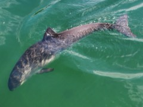
Harbour porpoise
Phocoena phocoena
Erik Christensen · CC BY-SA 3.0 (local license)
Original source · Local JPEG
Captive animal photographed at Fjord & Bælt, Kerteminde, Denmark.
Resized to at most 240 pixels on the longest edge and recompressed as JPEG. Display may crop to a square.
Its small triangular dorsal fin and blunt head help distinguish this porpoise from dolphins. Fact source (NOAA)
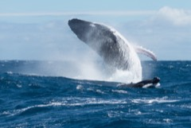
Humpback whale
Megaptera novaeangliae
Jérémie Silvestro · CC BY-SA 4.0 (local license)
Original source · Local JPEG
Mother and calf photographed off Tahiti, French Polynesia.
Resized to at most 240 pixels on the longest edge and recompressed as JPEG. Display may crop to a square.
Researchers recognise individual humpbacks by the patterns, shape and scars on their tail flukes. Fact source (NOAA)
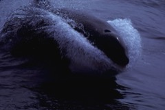
Killer whale (orca)
Orcinus orca
Allen Shimada, NOAA/NMFS/OST/AMD · Public domain (US government work)
Original source · Local JPEG
NOAA Photo Library image anim1133; file description identifies a killer whale.
Resized to at most 240 pixels on the longest edge and recompressed as JPEG. Display may crop to a square.
Killer whale groups learn distinctive calls that help keep members together. Fact source (NOAA)
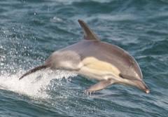
Short-beaked common dolphin
Delphinus delphis
Netspy (photograph), Medium69 (source crop) · CC BY-SA 3.0 (local license)
Original source · Local JPEG
Source is already cropped by Medium69; the file page explicitly identifies Delphinus delphis and credits Netspy for the photograph.
Resized to at most 240 pixels on the longest edge and recompressed as JPEG. Display may crop to a square.
A yellowish panel and grey flank form the distinctive hourglass pattern on its sides. Fact source (NOAA)
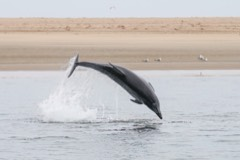
Common bottlenose dolphin
Tursiops truncatus
Giles Laurent · CC BY-SA 4.0 (local license)
Original source · Local JPEG
Photographed at Pelican Point, Namibia.
Resized to at most 240 pixels on the longest edge and recompressed as JPEG. Display may crop to a square.
Bottlenose dolphins can cooperate to herd fish before taking turns feeding on the school. Fact source (NOAA)
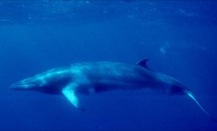
Common minke whale
Balaenoptera acutorostrata
NOAA · Public domain (US government work)
Original source · Local JPEG
File description explicitly identifies Balaenoptera acutorostrata, not Antarctic minke whale.
Resized to at most 240 pixels on the longest edge and recompressed as JPEG. Display may crop to a square.
Northern Hemisphere common minke whales have a conspicuous white band across each flipper. Fact source (NOAA)
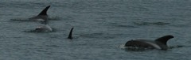
White-beaked dolphin
Lagenorhynchus albirostris
Hannah Beker · CC BY-SA 3.0 (local license)
Original source · Local JPEG
Swimming animals; file description and species category identify white-beaked dolphins. No photograph location is asserted.
Resized to at most 240 pixels on the longest edge and recompressed as JPEG. Display may crop to a square.
White-beaked dolphins sometimes work together to catch schooling fish. Fact source (NOAA)
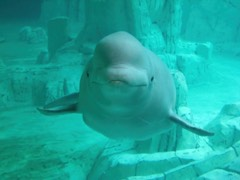
Beluga (white whale)
Delphinapterus leucas
Carquinyol · CC BY-SA 2.0 (local license)
Original source · Local JPEG
Captive beluga at L’Oceanogràfic, Valencia, Spain.
Resized to at most 240 pixels on the longest edge and recompressed as JPEG. Display may crop to a square.
Belugas can turn and nod their heads because their neck vertebrae are not fused. Fact source (NOAA)
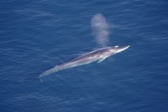
Fin whale
Balaenoptera physalus
Aqqa Rosing-Asvid / Visit Greenland · CC BY 2.0 (local license)
Original source · Local JPEG
Photographed off Greenland.
Resized to at most 240 pixels on the longest edge and recompressed as JPEG. Display may crop to a square.
The lower jaw has contrasting colours, dark on the left and white on the right. Fact source (NOAA)
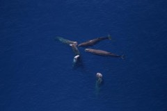
Sperm whale
Physeter macrocephalus
NOAA Northeast Fisheries Science Center · Public domain (US government work)
Original source · Local JPEG
Aerial view of six sperm whales.
Resized to at most 240 pixels on the longest edge and recompressed as JPEG. Display may crop to a square.
A sperm whale’s single blowhole sits off centre on the left side of its head. Fact source (NOAA)
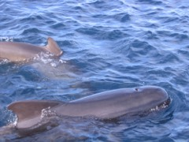
Long-finned pilot whale
Globicephala melas
Aleuze · Public domain (released by copyright holder)
Original source · Local JPEG
File description identifies Globicephala melas in the Strait of Gibraltar.
Resized to at most 240 pixels on the longest edge and recompressed as JPEG. Display may crop to a square.
Its common name refers to the long, curved flippers on either side of its body. Fact source (NOAA)
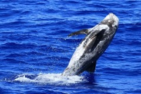
Risso's dolphin
Grampus griseus
NOAA Fisheries/J. Cotton · Public domain (US government work)
Original source · Local JPEG
Photographed during the 2010 Hawaiian Islands Cetacean and Ecosystem Assessment Survey.
Resized to at most 240 pixels on the longest edge and recompressed as JPEG. Display may crop to a square.
Risso’s dolphins often become paler with age and accumulate conspicuous scars. Fact source (NOAA)
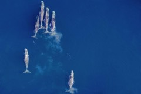
Bowhead whale
Balaena mysticetus
NOAA Fisheries/Amelia Brower · Public domain (US government work)
Original source · Local JPEG
Aerial view of a pod feeding in the Arctic. This is the credited science-section photograph, not the uncredited hero.
Resized to at most 240 pixels on the longest edge and recompressed as JPEG. Display may crop to a square.
Bowheads have the longest baleen plates of any whale, used to filter small prey from seawater. Fact source (NOAA)
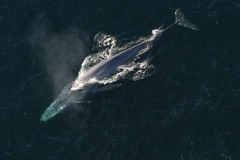
Blue whale
Balaenoptera musculus
NOAA Fisheries · Public domain (US government work)
Original source · Local JPEG
Blue whale swimming at the surface.
Resized to at most 240 pixels on the longest edge and recompressed as JPEG. Display may crop to a square.
Blue whales trap krill with baleen plates while pushing swallowed seawater out of their mouths. Fact source (NOAA)
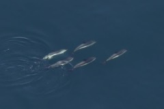
Atlantic white-sided dolphin
Lagenorhynchus acutus
NOAA Fisheries · Public domain (US government work)
Original source · Local JPEG
Group of Atlantic white-sided dolphins.
Resized to at most 240 pixels on the longest edge and recompressed as JPEG. Display may crop to a square.
A white flank patch beneath a yellowish streak helps identify this dolphin. Fact source (NOAA)
Species without a verified local photograph receive a labelled illustration. It represents a generic cetacean and is not a species identification drawing. The same fallback appears if a local photograph fails to load. The original illustration is dedicated under CC0 1.0 (local license).


.jpg){kind=link}